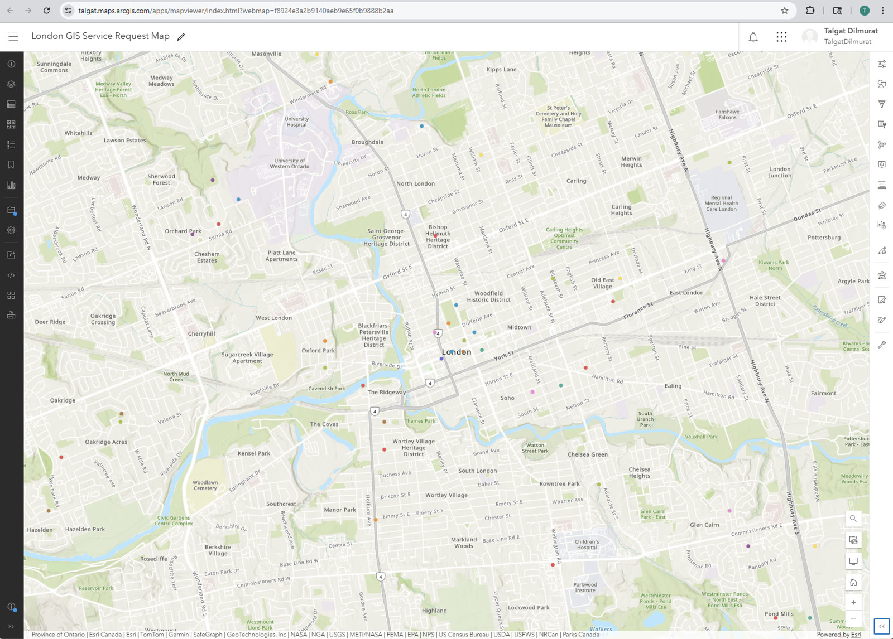

London, Ontario
GIS, Systems, and the work between them
Software Engineering graduate building toward municipal systems work
focus : spatial data · process · turning data into decisions
About
Software Engineering Technology graduate now focused on GIS and business systems analysis. I'm drawn to the space where data becomes decision-making — where a clean schema or a well-mapped workflow quietly changes how an organization works.
Before tech, the path took its time. I studied linguistics, taught languages, and worked as a certified interpreter. I ran a small e-commerce business. I worked in marketing operations and nonprofit administration. The range is the point — I can move between technical and non-technical contexts without losing either side.
Projects
Studies
Same problem domain — municipal service requests — explored through four lenses before I assembled them into CityFlow. Each study is a stage of learning: schema design, REST API patterns, spatial publication, then process modeling.
First I needed to understand how municipal service request data should be structured. Designed a normalized 6-table schema with foreign keys, indexes, and a status history audit trail.
MySQL · normalization · audit trail
Built an 8-endpoint Spring Boot REST API around that schema — full CRUD plus filtering, keyword search, and an analytics endpoint. Production config included.
Java 17 · Spring Boot · Hibernate · H2 / MySQL
Published the data spatially in ArcGIS Online as a hosted feature layer — plus a Leaflet.js browser version loading from CSV with no backend.
ArcGIS Online · Leaflet.js · CSV
Stepped back and modeled the underlying business process — current-state mapping, root cause analysis of 7 pain points, redesigned workflow with SLA escalation.
Process mapping · BPMN · SLA design
GIS Projects
Hosted feature layers, interactive maps, and operational dashboards built with ArcGIS Online — turning raw service request data into spatial insight.
Live operational dashboard visualizing 50 simulated 311 service requests — interactive map, total count indicator, issue-type pie chart, priority bar chart, and a searchable request list. Built on a hosted ArcGIS Online feature layer.

ArcGIS Map Viewer50 simulated 311 service requests published as an ArcGIS Online hosted feature layer, styled by issue type with unique symbols. Includes a Leaflet.js browser version loading directly from CSV — no backend required.
ArcGIS Story Maps
Maps built with ArcGIS Story Maps — combining spatial data, layers, and narrative to make geographic information readable and useful.
One pothole through the full lifecycle of a municipal service request — intake, AI triage, dispatch, resolution. Anchored on Oxford & Richmond, London ON.
Illustrative composite — not real City of London data.
Open in ArcGIS →A BSA-lens read of how London publishes its open spatial data — what the datasets do well, where the gaps are. In progress.
A spatial walkthrough of London's cycling network — Can-BICS comfort classes, access buffers, and the gap. Gated by Phase 2 ArcGIS Pro work.
Full-stack apps
Three ASP.NET Core MVC apps — each solving a real problem, each running live. Built on EF Core + SQLite, containerized with Docker, deployed on Render.
Assigns interpreters to appointments across languages, with live conflict detection that flags double-bookings before they happen. Calendar view and full appointment lifecycle.
ASP.NET Core MVC · EF Core · SQLite
Tracks certifications, logs study sessions, and visualizes consistency with a 30-day study heatmap and daily streak counter. Modeled on my own Esri Academy and AZ-900 workflow.
ASP.NET Core MVC · EF Core · SQLite
Multi-language vocabulary platform built around the SM-2 spaced-repetition algorithm. Deck-based organization, multiple-choice quizzes, keyboard-driven flashcard reviews.
ASP.NET Core MVC · EF Core · SQLite · Session
Live demos run on Render's free tier — the first load may take ~30s to wake.
Skills
| GIS Stack |
ArcGIS Pro
ArcGIS Online
Leaflet.js
Spatial Data
Coordinate Systems
|
| Web Application |
React 18
Node.js
.NET / C#
REST APIs
JSON
|
| Data |
SQL
PostgreSQL
MySQL
Relational Modeling
|
| Systems & Automation |
Python
Git
Jira
|
| Business Analysis |
Process Mapping
Workflow Documentation
Requirements Gathering
Stakeholder Communication
|
| Programming Foundation |
Java
Spring Boot
Object-Oriented Design
|
| Actively building |
ArcGIS Enterprise
ArcGIS Monitor
OAuth
ETL
PowerShell
Windows Server
IIS
|
Education & Training
Esri Academy — 11 ArcGIS courses (Pro, Online, Enterprise, Monitor) · Centennial College — three-year Software Engineering Technology advanced diploma, 21 courses across systems, data, business analysis, and programming.
| Course | Type |
|---|---|
| ArcGIS Business Analyst Pro Basics | Web Course |
| The Systems Approach to ArcGIS: System Life Cycle | Web Course |
| The Systems Approach to ArcGIS: An Introduction | Web Course |
| Administering ArcGIS Online Content | Web Course |
| Introduction to AI in ArcGIS | Web Course |
| Introduction to Coordinate Systems | Web Course |
| ArcGIS Online Basics | Web Course |
| ArcGIS Pro Basics | Web Course |
| GIS Basics | Web Course |
| Getting Started with Data Management | Web Course |
| Introduction to ArcGIS Monitor | Training Seminar |
Full transcript available on request.
Currently
A running record of what I'm studying and building right now.
Self-directed study on Portal for ArcGIS, ArcGIS Server, licensing, patching, and geodatabases. Building familiarity beyond ArcGIS Online.
GIS, Mapping & Spatial Analysis (University of Toronto) · Business Analyst Professional (IBM) · PostgreSQL for Everybody (University of Michigan).